Learning Goals
At the end of this Tutorial, you will be able to:
- Recognise the most commonly used CSS text properties in frontend development:
- font-family
- font-weight
- font-style
- text-align
- line-height
- letter-spacing
- text-transform
- font-size
- Using system fonts from the font-stack with CSS custom properties.
- Applying a fluid typographic scale to adjust font sizes in a web page responsively according to the viewport width.
Styling with the font-family property
The two basic values of the font-family property in CSS are serif and sans-serif.
- Serifs are the small lines or ‘squiggles’ at the ends of letter, numbers and other characters.
- Sans-serif fonts do not have these serifs (‘sans’ is French for ‘without’.)

By default, web browsers all text in a serif font.
/* These two style rules make no difference. Both h2 and h3 sub-headings are already serif by default. */ h2 { font-family: serif } h3 { font-family: serif } /* This style rule does make a difference. */ p { font-family: sans-serif }
For printed documents, such as books, newspapers, magazines and so on...
- Serif fonts are generally used for long paragraphs of text. This is because the serifs help the human eye to recognise whole words rather than sequences of individual letters.
- For headings and short blocks of text, either serif or sans-serif fonts are equally appropriate choices.
In web pages, however, there is no evidence that paragraphs of text are more readable in serif fonts. So you will see fonts of either the serif or sans-serif family used for various elements of web pages.
About font stacks
Unfortunately, the built-in browser fonts of serif and sans-serif are not very attractive, especially on Windows. For this reason, it is better to use the font-stacks stored in the CSS properties block in your stylesheets instead.
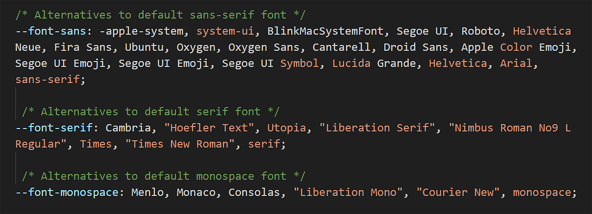Font stacks are lists of fonts that tell the browser what to display in order of preference.
When the web browser displays the web page, it starts at the beginning of the list ('stack') and checks if the first font is available on the user's device. If that font isn't available, it moves to the next one, and so on.
Updating the font-family property in your stylesheets
Here are the steps. In VS Code:
- Open style-1.css.
- Update the h1, h2, h3 and p style declarations as shown below. 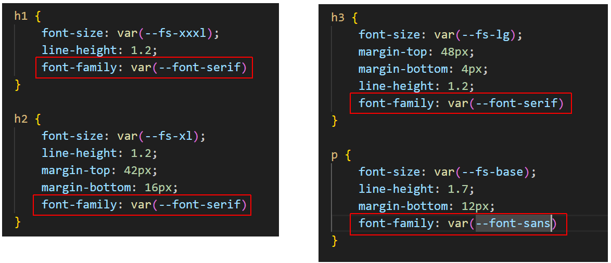
- Save the style-1.css file and view the linked page-1.html web page in your browser.
- Open style-2.css.
- Update the h1, h2 and p style declarations as shown below. 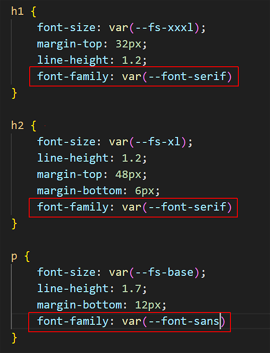
- Save the style-2.css file and view the linked page-2.html web page in your browser.
- Open style-3.css.
- Add a new body style declaration as shown below. 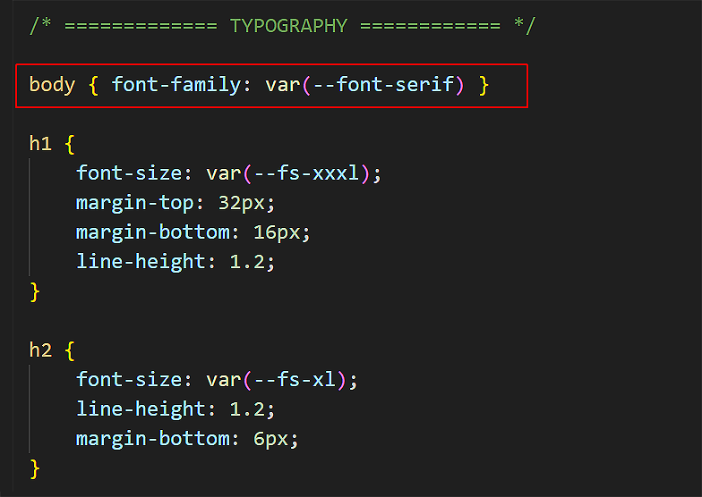
- Save the style-3.css file and view the linked page-3.html web page in your browser.
Styling with the font-weight property
The two basic values of font-weight are normal and bold. By default, web browsers display paragraphs in normal weight and all headings and sub-headings in bold.
/* This does make a difference. Headings are bold by default. */
h2 { font-weight: normal }
/* This makes no difference. Paragraphs are normal by default. */
p { font-weight: normal }
As you learnt in the previous Working with HTML Tutorial, you can make one or a few words in an element bold with the <b> ... </b> tag pair in HTML.

To make an entire heading or text paragraph bold, however, use the font-weight: bold property and value pair in CSS.
Updating the font-weight property in your stylesheets
Often, large <h1> headings look better when they are not bold. Follow these steps:
- Open style-1.css.
- Update the h1 style declaration as shown below. 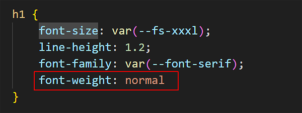
- Save the style-1.css file and view the linked page-1.html web page in your browser.
- Open style-2.css.
- Update the h1 style declaration as shown below.
- Save the style-2.css file and view the linked page-2.html web page in your browser.
- Open style-3.css.
- Add a new header h2 style declaration as shown below. 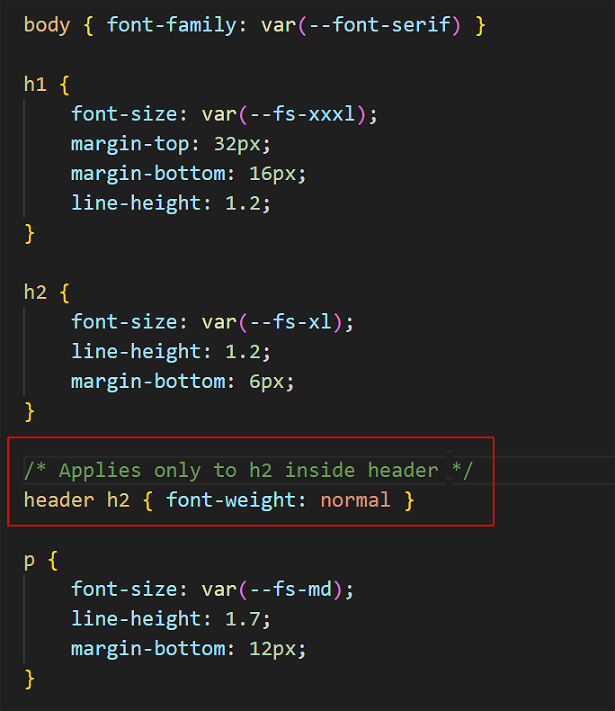 This ensures that only the <h2> tag inside the <header> container will be 'targeted' by the style rule. Other <h2> tags inside the <section> containters will be unaffected.
- Save the style-3.css file and view the linked page-3.html web page in your browser.
Styling with the font-style property
The two basic values of font-style are normal and italic. By default, web browsers display all headings, sub-headings and text paragraphs in the normal font-style.
/* These make no difference. Both are already normal by default. */
h2 { font-style: normal }
p { font-style: normal }
As you learnt in the previous Working with HTML Tutorial, you can make one or a few words in an element italic with the <i> ... </i> tag pair in HTML.

To make an entire heading or text paragraph bold, however, use the font-style: italic property and value pair in CSS. The two examples below are from Lou Levits.

Updating the font-style property in a stylesheet
Let's use this property for style-3.css. In VS Code:
- Open style-3.css.
- Update the header h2 style declaration as shown below. 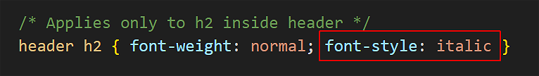
- Save the style-3.css file and view the linked page-3.html web page in your browser.
Styling with the text-align property
In Microsoft Word or other word processors, you are typically offered four choices for aligning both headings and text paragraphs: Left, Centered, Right and Justified.
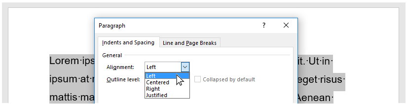In CSS, the equivalent alignment values are:
text-align: left; /* Default value */
text-align: center;
text-align: right;
text-align: justify; /* Not recommended. !!! NEVER USE THIS !!! */
Below are examples of the left, center and right values of the text-align property in CSS.

The justify value of text-align is not recommended because web browsers do not distribute spacing between characters and words proportionally.
Updating the text-align property in stylesheets
Often, you will want to centre-align the <h1> heading at the top of a web page. Here are the steps. In VS Code:
- Open style-1.css.
- Update the h1 style declaration as shown below. 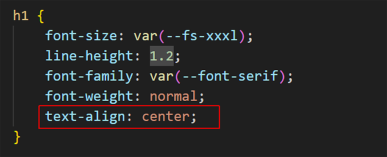
- Save the style-1.css file and view the linked page-1.html web page in your browser.
- Open style-2.css.
- Update the h1 style declaration as shown below. 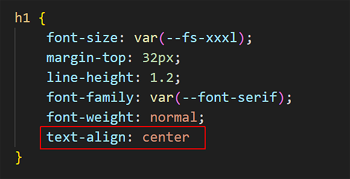
- Save the style-2.css file and view the linked page-2.html web page in your browser.
Styling with the line-height property
The line-height property sets the vertical distance between lines of text within a block-level tag. For most web browsers, the default line-height is in the range 1.1 to 1.2.
- The lines in headings and sub-headings are typically close together. So you usually will not want to change the line-height for your <h1>, <h2> and <h3> tags.
- For <p> paragraphs of text, however, it is a good idea to increase the line-height to a value between 1.5 and 1.7.

About vertical margins and line-height
As you learnt in the Working with Layout Tutorial, the margin-top and margin-bottom properties control how much vertical spacing is displayed above and below block-level tags.
Consider the Microsoft Word Paragraph dialog box below.

The equivalent in CSS would be:
- The margin-top is set to 0.
- The margin-bottom is set to 12px.
- The line-height is set to 1.6.
Below you can see examples of margin-top, margin-bottom and line-height values in CSS.

Styling with the letter-spacing property
The letter-spacing property sets the spacing between text characters within a heading, sub-heading or paragraph. Like the margin property, you can set letter-spacing in px units.
- To reduce the letter-spacing, use a negative value. For example:
h1 { /* This REDUCES the letter-spacing. */ letter-spacing: -2px }
- To increase the letter-spacing, use a positive value. For example:
h2 { /* This INCREASES the letter-spacing. */ letter-spacing: 6px }
In web pages, reduced or increased letter-spacing is often used in headings for visual effect. In text paragraphs, however, web designers typically use default letter spacing.
You will commonly see letter spacing effects applied in brand logos to achieve a distinctive appearance. See the examples below.
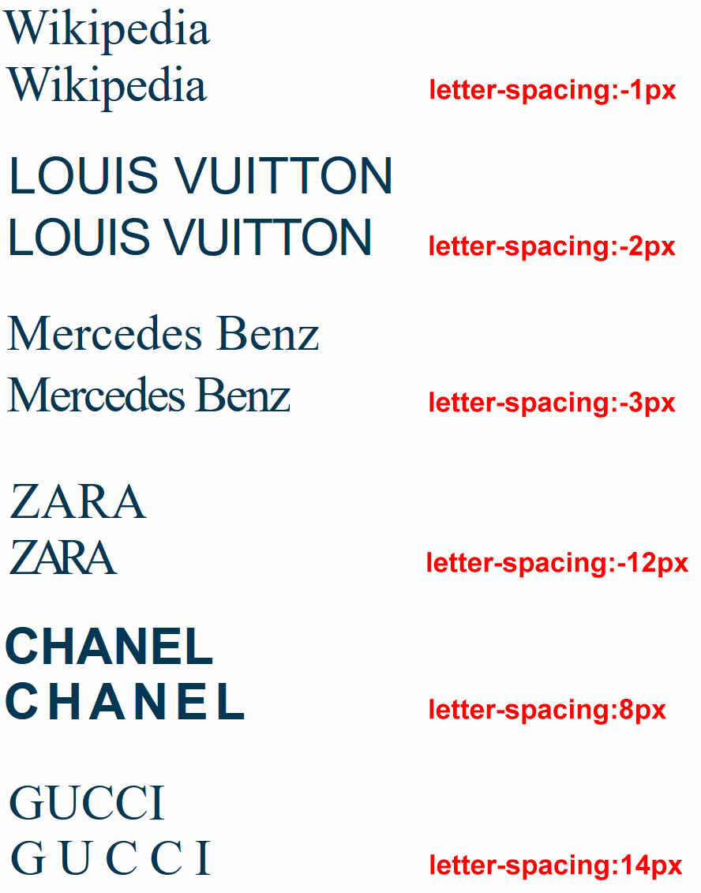Updating the letter-spacing property in stylesheets
Follow these steps. In VS Code:
- Open style-1.css.
- Update the h1 and h2 style declaration as shown below. 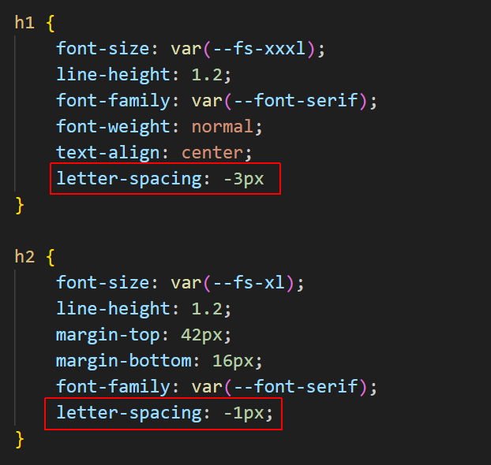
- Save the style-1.css file and view the linked page-1.html web page in your browser.
- Open style-2.css.
- Update the h1 and h2 style declaration as shown below. 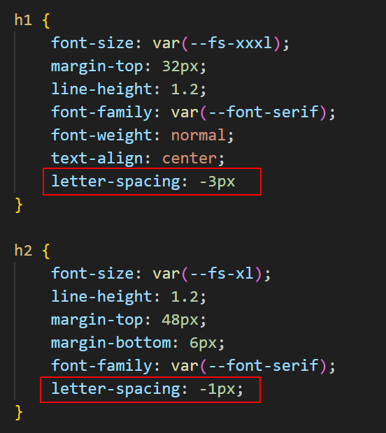
- Save the style-2.css file and view the linked page-2.html web page in your browser.
- Open style-3.css.
- Add a new section h2 style declaration as shown below. 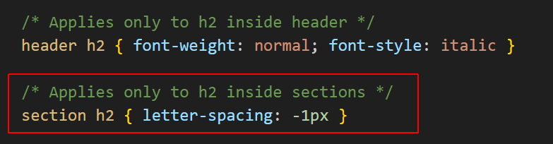
- Save the style-3.css file and view the linked page-3.html web page in your browser.
Styling with the text-transform property
The text-transform property sets case of text (upper, lower, capitals) without actually changing the text in your HTML.
This property can:
- Make text ALL CAPITAL LETTERS
- Make text all lowercase letters
- Capitalize The First Letter Of Each Word.
Updating the text-transform property in a stylesheet
Follow these steps. In VS Code:
- Open style-2.css.
- Add a new style rule to the h2 style declaration as shown below. 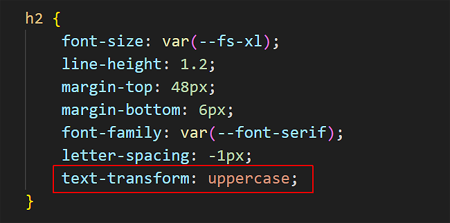
- Save the style-2.css file and view the linked page-2.html web page in your browser.
Styling with the font-size property
As its name suggests, the font-size property sets the size of text in headings and paragraphs.
In web design, font sizes can be measured in different units. The simplest of these is px, which is short for pixels.
Here are the default values of font-size for headings and paragraphs used by most web browsers.
/* Default values for font-sizes in most web browsers. */
h1 { font-size: 32px }
h2 { font-size: 24px }
h3 { font-size: 18px }
p { font-size: 16px }
In modern web design, font size is typically set using a responsive scale that changes according to the width of the viewport.
About fluid typography
Fluid typography means that the font sizes of text – headings, paragraphs, bulleted lists, menu items – on a web page ‘scale’ (shrink or expand) smoothly according to the width of the user’s device viewport.
Here are some examples of web pages that did not use fluid typography to scale font sizes correctly for mobile phone screens.

The effect you want to achieve is shown in the animation below.

The modern approach is to use the CSS clamp() function and include a range of preset values as custom properties in your stylesheets.
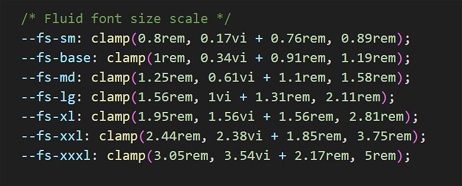This fluid font scale comes from the website below:
https://www.fluid-type-scale.com
Updating the font-size property in stylesheets
Particularly for <h1> and <h2> headings, the font-size values you choose will depend on the number of characters in the heading.
Follow these steps. In VS Code:
- Open style-1.css.
- Edit the font-size style rule to the h1 style declaration as shown below. 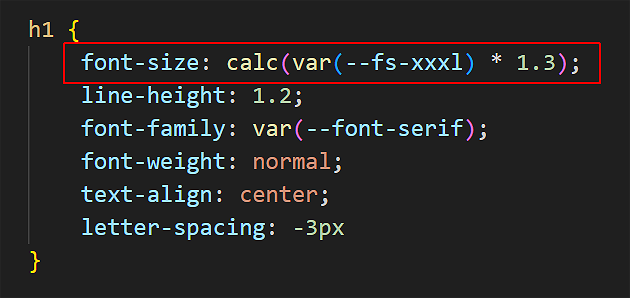
- Save the style-1.css file and view the linked page-1.html web page in your browser.
- Open style-2.css.
- Edit the font-size style rule to the h1 style declaration as shown below. 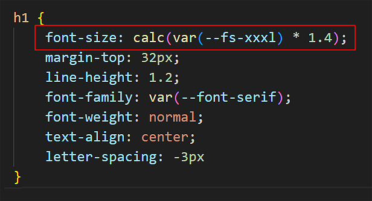
- Save the style-2.css file and view the linked page-2.html web page in your browser.
- Open style-3.css.
- Edit the font-size style rule to the p style declaration as shown below. 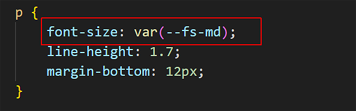
- Save the style-3.css file and view the linked page-3.html web page in your browser.
Updating your global.css stylesheet
Follow these steps to update the stylesheet for your website's home page:
- In VS Code, open the global.css file in your main 📁 assets/css folder.
- Update the stylesheet file as shown below: 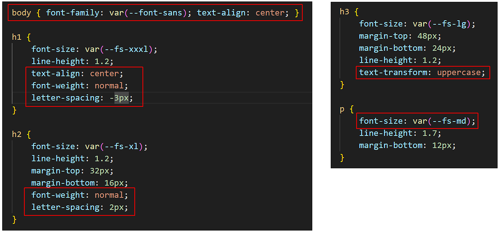
- Save the global.css file and view the linked index.html web page in your browser.
Your four completed web pages should now look similar to the following:
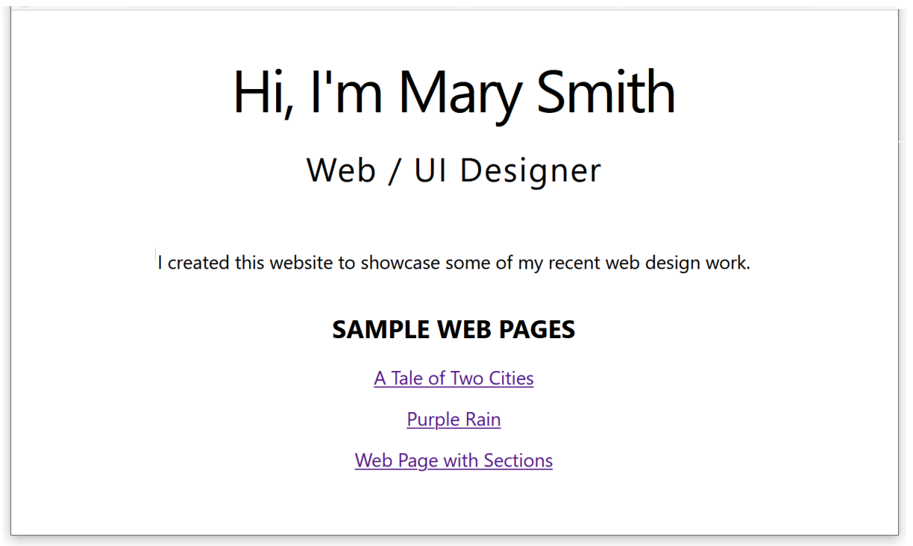 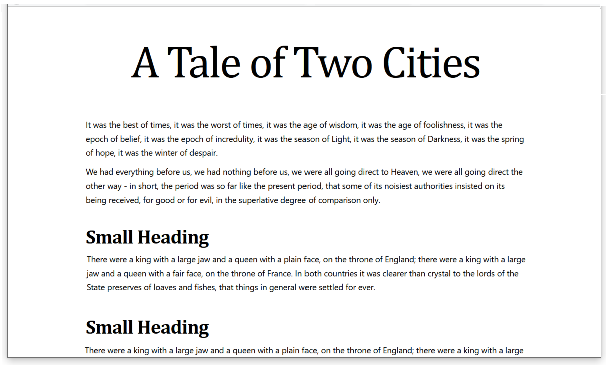 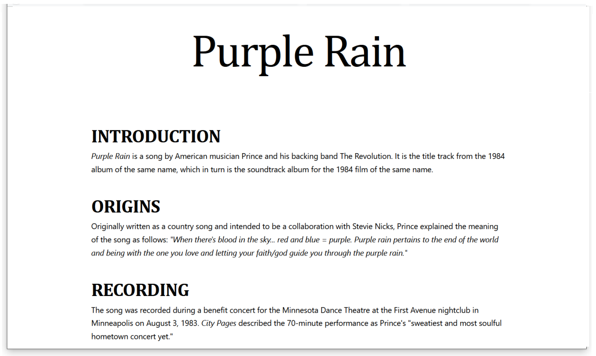 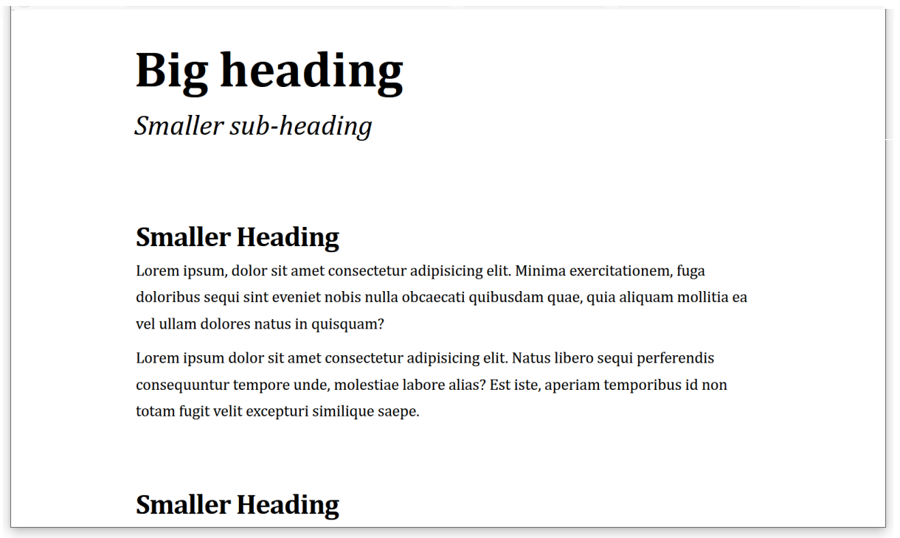Uploading your work to GitHub
You are now ready to upload your work to your account on GitHub.
- Open a new tab in your web browser and go to github.com. If you are not already signed in to your GitHub account, sign in now.

- On your GitHub home page, click the name of the repository (‘repo’) that holds your web pages. It's name will look as follows, where username is your chosen username on GitHub.
username.github.io

- On the next GitHub screen displayed, near the right of the screen, you can see a button named Add file. Click on it.

- From the dropdown list displayed, choose the option Upload files.

- In File Explorer (Windows) or Finder (Apple Mac), drag-and-drop your index.html file and your 📁 assets and 📁 exercises sub-folders to upload them to your repository on GitHub. 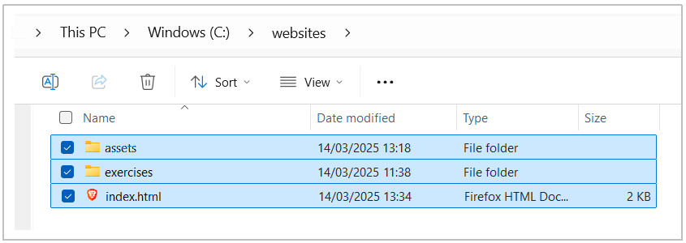
- Scroll down to the bottom of the GitHub screen, and accept or edit the short message (Add files via upload) in the Commit changes box.
- Finally, click the green Commit changes button to upload your entire exercises sub-folder and all the files it contains.
Your web pages are now published on GitHub at a web address similar to the following, where username is the username you have chosen for your GitHub account:
https://username.github.io/
https://username.github.io/exercises/page-1.html
https://username.github.io/exercises/page-2.html
https://username.github.io/exercises/page-3.html
It may take a few minutes for your uploaded files to appear on GitHub.
More learning resources
Tutorial Quiz
Tutorial Podcast
Sample AI prompts
At the end of the Container/Semantic Elements Tutorial were a number of sample AI prompts for generating HTML sample files. For each HTML file you created and saved in your 📁 exercises folder, use the prompts below to generate a CSS file.
For each CSS file, copy the generated output, open VS Code, choose File | New Text File, and then paste in the AI content.
Choose File | Save to save your file in your 📁 exercises/assets/css folder. Name your file something.css. (Replace 'something' with a suitable file name.) Do NOT use capital letters or empty spaces in the file name.
In VS Code, open the relevant HTML file, and link it to the appropriate CSS file.
Finally, display your HTML file in a web browser.
For the HTML pasted below, please generate a stylesheet CSS file that includes:
* An industry-standard resets block at the top of the file.
* Appropriate responsive padding for the container tags of <header> and <section>. Use media queries and a breakpoint of 768px.
* Add appropriate margin-top and margin-bottom values for the block-level elements.
* Add two font stacks for Windows and MacOS as CSS custom properties, one for serif and one for sans-serif, and apply them to the block-level HTML elements as you think appropriate.
* Add a fluid font scale as custom properties, using the CSS clamp() function, and apply values you think appropriate to the block-level elements.
[Paste the HTML file here]